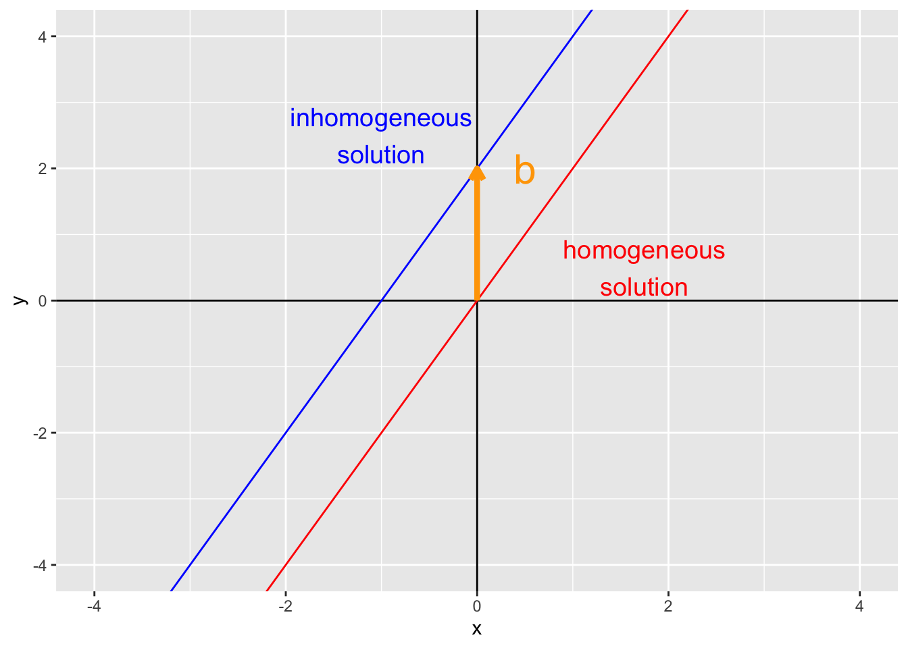

library(tidyverse)
library(dasc2594)
library(gg3D)5 Matrix equations
Here we introduce the concept of the linear equation \(\mathbf{A} \mathbf{x} = \mathbf{b}\). This equation is the most fundamental equation in all of statistics and data science. Given a matrix \(\mathbf{A}\) and a vector of constants \(\mathbf{b}\), the goal is to solve for the value (or values) of \(\mathbf{x}\) that are a solution to this equation. The equation \(\mathbf{A} \mathbf{x} = \mathbf{b}\) is a matrix representation of the system of linear equations
\[ \begin{aligned} \mathbf{A} \mathbf{x} & = \mathbf{b} \\ \begin{pmatrix} \mathbf{a}_1 & \ldots & \mathbf{a}_K \end{pmatrix} \begin{pmatrix} x_1 \\ \vdots \\ x_K \end{pmatrix} & = \mathbf{b} \\ x_1 \mathbf{a}_1 + \ldots + x_K \mathbf{a}_K & = \mathbf{b} \\ \end{aligned} \tag{5.1}\]
as long as the matrix \(\mathbf{A}\) has \(n\) rows and \(K\) columns and the vectors \(\mathbf{a}_k\) are \(n\)-dimensional.
Example: in class
Example: in class
5.1 Solutions of matrix equations
Because the matrix equation \(\mathbf{A} \mathbf{x} = \mathbf{b}\) is equivalent to a linear system of equations \(x_1 \mathbf{a}_1 + \ldots + x_K \mathbf{a}_K = \mathbf{b}\), we can solve the matrix equation \(\mathbf{A} \mathbf{x} = \mathbf{b}\) by writing the equation in an augmented matrix form
\[ \begin{aligned} \begin{pmatrix} \mathbf{a}_1 & \ldots & \mathbf{a}_K & \mathbf{b} \end{pmatrix} \end{aligned} \]
and then reducing the matrix to reduced row echelon form. This gives rise to the theorem
Theorem 5.1
The matrix equation \(\mathbf{A} \mathbf{x} = \mathbf{b}\), the vector equation \(x_1 \mathbf{a}_1 + \ldots + x_K \mathbf{a}_K = \mathbf{b}\), and the augmented matrix \(\begin{pmatrix} \mathbf{a}_1 & \ldots & \mathbf{a}_K & \mathbf{b} \end{pmatrix}\) all have the same solution set.
5.2 Existence of solutions
A solution to the matrix equation \(\mathbf{A} \mathbf{x} = \mathbf{b}\) exists if and only if \(\mathbf{b}\) is a linear combination of the columns of \(\mathbf{A}\). In other words, \(\mathbf{A} \mathbf{x} = \mathbf{b}\) has a solution if and only if \(\mathbf{b}\) is in the \(\mbox{span}\{\mathbf{a}_1, \ldots, \mathbf{a}_K\}\).
- Example: in class Let \(\mathbf{A} =\ldots\) and \(\mathbf{b} = \ldots\). Is the matrix equation \(\mathbf{A} \mathbf{x} = \mathbf{b}\) consistent?
Theorem 5.2 For the \(n \times K\) matrix \(\mathbf{A}\), the following statements are equivalent:
For each \(\mathbf{b} \in \mathcal{R}^n\), the equation \(\mathbf{A} \mathbf{x} = \mathbf{b}\) has at least one solution
Each \(\mathbf{b} \in \mathcal{R}^n\) is a linear combination of the columns of \(\mathbf{A}\)
The columns of \(\mathbf{A}\) span \(\mathcal{R}^n\)
\(\mathbf{A}\) has \(n\) pivot columns. (\(\mathbf{A}\) has a pivot in every row)
5.3 Matrix-vector multiplication
To calculate \(\mathbf{A} \mathbf{x}\), we need to define matrix multiplication. The equivalence between the linear systems of equations \(x_1 \mathbf{a}_1 + \ldots + x_K \mathbf{a}_K = \mathbf{b}\) and the matrix equation \(\mathbf{A} \mathbf{x}\) gives a hint in how to do this. First, recall the definition of \(\mathbf{A}\) and \(\mathbf{x}\)
\[ \begin{aligned} \mathbf{A} = \begin{pmatrix} a_{11} & a_{12} & \ldots & a_{1K} \\ a_{21} & a_{22} & \ldots & a_{2K} \\ \vdots & \vdots & \ddots & \vdots \\ a_{n1} & a_{n2} & \ldots & a_{nK} \\ \end{pmatrix} && \mathbf{x} = \begin{pmatrix} x_1 \\ x_2 \\ \vdots \\ x_K \end{pmatrix} \end{aligned} \]
The matrix product \(\mathbf{A}\mathbf{x}\) is the linear system of equations
\[ \begin{aligned} \mathbf{A} \mathbf{x} & = \begin{pmatrix} a_{11} & a_{12} & \ldots & a_{1K} \\ a_{21} & a_{22} & \ldots & a_{2K} \\ \vdots & \vdots & \ddots & \vdots \\ a_{n1} & a_{n2} & \ldots & a_{nK} \\ \end{pmatrix} \begin{pmatrix} x_1 \\ x_2 \\ \vdots \\ x_n \end{pmatrix} \\ & = x_1\begin{pmatrix} a_{11} \\ a_{21} \\ \vdots \\ a_{n1} \end{pmatrix} + x_2 \begin{pmatrix} a_{12} \\ a_{22} \\ \vdots \\ a_{n2} \end{pmatrix} + \cdots + x_K \begin{pmatrix} a_{1K} \\ a_{nK} \\ \vdots \\ a_{nK} \end{pmatrix} \\ & = \begin{pmatrix} a_{11} x_1 + a_{12} x_2 + \ldots + a_{1K} x_K \\ a_{21} x_1 + a_{22} x_2 + \ldots + a_{2K} x_K \\ \vdots \\ a_{n1} x_1 + a_{n2} x_2 + \ldots + a_{nK} x_K \\ \end{pmatrix} \end{aligned} \]
Notice that the first row of the last matrix above has the sum first row of the matrix \(\mathbf{A}\) multiplied by the corresponding elements in \(\mathbf{x}\) (i.e., first element \(a_{11}\) of the first row of \(\mathbf{A}\) times the first element \(x_1\) of \(\mathbf{x}\) plus the second, third, fourth, etc.). Likewise, this pattern holds for the second row, and all the other rows. This gives an algorithm for evaluating the product \(\mathbf{A} \mathbf{x}\).
Definition 5.1
The product \(\mathbf{A}\mathbf{x}\) of a \(n \times K\) matrix \(\mathbf{A}\) with a \(K\)-vector \(\mathbf{x}\) is a \(n\)-vector where the \(i\)th element of \(\mathbf{A}\mathbf{x}\) is the sum of the \(i\)th row of \(\mathbf{A}\) times the corresponding elements of the vector \(\mathbf{x}\)
Example: in class
Example: in class
Example: in R using loops
Example: in R using
%*%
5.4 Properties of matrix-vector multiplication
If \(\mathbf{A}\) is a \(n \times K\) matrix, \(\mathbf{u}\) and \(\mathbf{v}\) are vectors in \(\mathcal{R}^K\) and \(c\) is a scalar, then
- \(\mathbf{A} (\mathbf{u} + \mathbf{v}) = \mathbf{A} \mathbf{u} + \mathbf{A} \mathbf{v}\)
- \(\mathbf{A} (c \mathbf{u}) = (c \mathbf{A}) \mathbf{u}\)
- Proof in class
5.5 Solutions of linear systems
5.5.1 Homogeneous linear systems of equations
Definition 5.2 The matrix equation
\[ \begin{aligned} \mathbf{A}\mathbf{x} = \mathbf{0} \end{aligned} \tag{5.2}\]
is called a homogeneous system of equations. The vector \(\mathbf{0}\) is a vector of length \(N\) composed of all zeros. The trivial solution of the homogeneous equation is when \(\mathbf{x} = \mathbf{0}\) and is not a very useful solution. Typically one is interested in nontrivial solutions where \(\mathbf{x} \neq \mathbf{0}\).
The homogeneous linear system of equations can be written in augmented matrix form
\[ \begin{aligned} \begin{pmatrix} \mathbf{a}_1 & \ldots & \mathbf{a}_K & \mathbf{0} \end{pmatrix} \end{aligned} \]
which implies that a non-trivial solution only exists if there is a free variable. Another way of saying this is that at least one column \(\mathbf{A}\) must not be a pivot column (Note: the last column of the augmented matrix will not be a pivot column because it will be a column of zeros). If every column of \(\mathbf{A}\) were a pivot column, the reduced row echelon form of the augmented matrix would be
\[ \begin{aligned} \begin{pmatrix} 1 & 0 & \ldots & 0 & 0 \\ 0 & 1 & \ldots & 0 & 0 \\ 0 & 0 & \ldots & 1 & 0 \end{pmatrix} \end{aligned} \]
which implies the only solution is the trivial solution \(\mathbf{0}\).
- Example: in class
\[ \begin{aligned} 3 x_1 - 2 x_2 + 4 x_3 = 0 \\ - 2 x_1 + 4 x_2 - 2 x_3 = 0 \\ 5 x_1 - 6 x_2 + 6 x_3 = 0 \end{aligned} \]
- Example: in class
Consider the equation
\[ \begin{aligned} 2x_1 + 4 x_2 - x_3 = 0. \end{aligned} \]
we can write this as
\[ \begin{aligned} x_1 = -2 x_2 + \frac{1}{2} x_3 \end{aligned} \]
where \(x_2\) and \(x_3\) are free variables. Writing this as a solution \(\mathbf{x}\) gives
\[ \begin{aligned} \mathbf{x} = \begin{pmatrix} x_1 \\ x_2 \\ x_3 \end{pmatrix} = \begin{pmatrix} -2 x_2 + \frac{1}{2} x_3 \\ x_2 \\ x_3 \end{pmatrix} = x_2 \begin{pmatrix} -2 \\ 1 \\ 0 \end{pmatrix} + x_3 \begin{pmatrix} \frac{1}{2} \\ 0 \\ 1 \end{pmatrix} \end{aligned} \]
which is a linear combination of the vectors \(\mathbf{u} = \begin{pmatrix} -2 \\ 1 \\ 0 \end{pmatrix}\) and \(\mathbf{v} = \begin{pmatrix} \frac{1}{2} \\ 0 \\ 1 \end{pmatrix}\). This implies that we can write the solution \(\mathbf{x} = c \mathbf{u} + d \mathbf{v}\) for scalars \(a\) and \(b\). Therefore, the solution set \(\mathbf{x}\) is contained in the \(\mbox{span}\{\mathbf{u}, \mathbf{v}\}\). Because the vectors \(\mathbf{u}\) and \(\mathbf{v}\) are linearly independent (they don’t point in the same direction), the set of all linear combinations of \(c \mathbf{u} + d \mathbf{v}\) defines a plane.
Definition 5.3
A solution set of the form \(\mathbf{x} = c \mathbf{u} + d \mathbf{v}\) is called a parametric vector solution.
5.6 Solutions to nonhomogeneous systems
Recall the simple linear equation
\[ y = mx + b \]
where \(m\) is the slope and \(b\) is the y-intercept. Setting \(b = 0\) gives a simple homogenous linear equation where the y-intercept goes through the origin (0, 0). When \(b\) is nonzero, the line keeps the same slope but is shifted upward/downward by \(b\).
ggplot(data = data.frame(x = 0, y = 0), aes(x, y)) +
geom_vline(xintercept = 0) +
geom_hline(yintercept = 0) +
geom_abline(slope = 2, intercept = 0, color = "red") +
geom_abline(slope = 2, intercept = 2, color = "blue") +
coord_cartesian(xlim = c(-4, 4), ylim = c(-4, 4)) +
geom_text(
data = data.frame(x = c(0, 0), y = c(0, 2), text = c("homogeneous\nsolution", "inhomogeneous\nsolution")),
aes(x = x + c(1.75, -1), y = y + 0.5, label = text), size = 5, inherit.aes = FALSE,
color = c("red", "blue")) +
geom_segment(
aes(x = 0, xend = 0, y = 0, yend = 2),
arrow = arrow(length = unit(0.1, "inches")),
size = 1.5, color = "orange") +
geom_text(
data = data.frame(x = 0, y = 2, text = "b"),
aes(x = x + 0.5, y = y, label = text),
size = 8, inherit.aes = FALSE,
color = "orange") 
This shift in location (but not in slope) is called a translation
- Example: Show this shift for a system of linear equations where the solution set defines a plane. From example above,
\[ \begin{aligned} 2x_1 + 4 x_2 - x_3 = 0. \end{aligned} \]
has the parametric solution \(\mathbf{x} = c \mathbf{u} + d \mathbf{v}\) with
\[ \begin{aligned} \mathbf{u} & = \begin{pmatrix} -2 \\ 1 \\ 0 \end{pmatrix} & \mathbf{v} & = \begin{pmatrix} \frac{1}{2} \\ 0 \\ 1 \end{pmatrix} \end{aligned} \]
Now, if we change the system of linear equations so that we have the inhomogeneous equation
\[ \begin{aligned} 2x_1 + 4 x_2 - x_3 = 20. \end{aligned} \]
we get the homogeneous solution set \(x_1 = -2 x_2 + \frac{1}{2} x_3 + 10\) which can be written in parametric form as \(\mathbf{x} = c \mathbf{u} + d \mathbf{v} + \mathbf{p}\) with
\[ \begin{aligned} \mathbf{u} & = \begin{pmatrix} -2 \\ 1 \\ 0 \end{pmatrix} & \mathbf{v} & = \begin{pmatrix} \frac{1}{2} \\ 0 \\ 1 \end{pmatrix} & \mathbf{p} & = \begin{pmatrix} 10 \\ 0 \\ 0 \end{pmatrix} \end{aligned} \]
For plotting, we will solve these equations for \(x_3\), letting \(x_1\) and \(x_2\) be free variables (this is just for the requirements of the plotting function). Thus, the homogeneous equation has the solution \(x_3 = 2x_1 + 4x_2\) and the inhomogenous equation has the solution \(x_3 = 2x_1 + 4x_2 - 20\).
# uses gg3D library
n <- 60
x1 <- x2 <- seq(-10, 10, length = n)
region <- expand.grid(x1 = x1, x2 = x2)
df <- data.frame(
x1 = region$x1,
x2 = region$x2,
x3 = c(
2 * region$x1 + 4 * region$x2,
2 * region$x1 + 4 * region$x2 - 20),
equation = rep(c("inhomogeneous", "homogeneous"), each = n^2))
# theta and phi set up the "perspective/viewing angle" of the 3D plot
theta <- 45
phi <- 20
ggplot(df, aes(x = x1, y = x2, z = x3, color = equation)) +
axes_3D(theta = theta, phi = phi) +
stat_wireframe(
alpha = 0.75,
theta = theta, phi = phi) +
scale_color_manual(values = c("inhomogeneous" = "blue", "homogeneous" = "red")) +
theme_void() +
labs_3D(hjust=c(0,1,1), vjust=c(1, 1, -0.2),
angle=c(0, 0, 90), theta = theta, phi = phi) Warning: Removed 4 row(s) containing missing values (geom_path).- Example: in class Let’s revisit the example from before
\[ \begin{aligned} 3 x_1 - 2 x_2 + 4 x_3 = 0 \\ - 2 x_1 + 4 x_2 - 2 x_3 = 0 \\ 5 x_1 - 6 x_2 + 6 x_3 = 0 \end{aligned} \]
but change this so that \(\mathbf{b} = \begin{pmatrix} 2 \\ -6 \\ 8 \end{pmatrix}\)
- Write this as a parametric solution with a mean shift
A <- matrix(c(3, -2, 5, -2, 4, -6, 4, -2, 6, 2, -6, 8), 3, 4)
rref(A) [,1] [,2] [,3] [,4]
[1,] 1 0 1.50 -0.50
[2,] 0 1 0.25 -1.75
[3,] 0 0 0.00 0.00\[ \begin{aligned} x_1 = \frac{3}{2} x_2 - \frac{1}{2}\\ x_2 = \frac{1}{4} x_3 - \frac{7}{4} \\ \end{aligned} \]
which was the same solution set as the homoegenous solution plus the additional vector \(\begin{pmatrix} -\frac{1}{2} \\ -\frac{7}{4} \\ 0 \end{pmatrix}\). Thus, the inhomogenous solution is now \(\mathbf{x} = c \mathbf{u} + d \mathbf{v} + \mathbf{p}\) where
\[ \begin{aligned} \mathbf{u} &= \begin{pmatrix} 1 \\ 0 \\ \frac{3}{2} \end{pmatrix} & \mathbf{v} &= \begin{pmatrix} 0 \\ 1 \\ \frac{1}{4} \end{pmatrix} & \mathbf{p} &= \begin{pmatrix} -\frac{1}{2} \\ -\frac{7}{4} \\ 0 \end{pmatrix} \end{aligned} \]
5.7 Finding solutions
The following algorithm describes how to solve a linear system of equations.
Put the system of equations in an augmented matrix form
Reduce the augmented matrix to reduced row echelon form
Express each determined variable as a function of the free variables.
Write the solution in a general form where the determined variables are a function of the independent variables
Decompose the solution \(\mathbf{x}\) into a linear combination of free variables as parameters